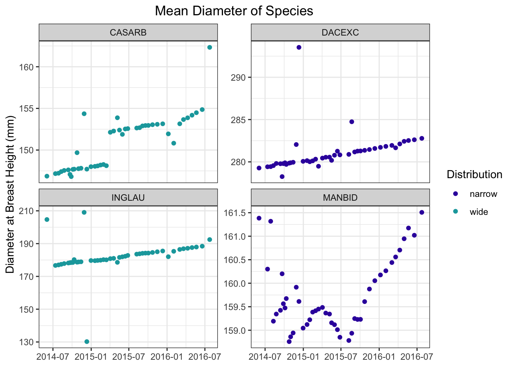

Climate change, in conjunction with other environmental stressors, continue to threaten forests around the world. Mass tree deaths, fires, and deforestation can create a negative feedback loop, turning these well-recognized carbon sinks into a carbon source. Forests are also recognized for their role in preventing erosion, filtering air, and providing habitat and recreation.
Droughts have been proven to adversely affect forest health. Minimal and inconsistent water supply affects phenology and increases the chance of insect outbreaks or wildfires1. While the severity of these threats is not novel to me, I recognized that most of my knowledge on the topic was based on studies conducted in temperate forests. I was curious to learn more about how droughts impacted tropical species, which are less adapted to severe weather fluctuations.
Goal
To conduct a statistical assessment of tropical tree growth under drought conditions. This was accomplished using a series of linear regressions to model the relationship between tree growth and several climate variables. Using these regressions, I sought to examine if tree species with a widespread familial distribution (left) were better prepared for droughts than species with narrow familial distribution (right).
Distribution data from Global Biodiversity Information Facility (GBIF)
Data
About the Data
Data of tree diameter over time is publicly available from the DataONE repository. This dataset includes measures of tree diameter at breast height (dbh) for several tropical tree species in the Luquillo National Research Forest in Puerto Rico. The Luquillo Forest is part of the Long-Term Ecological Research Network (LTER), so substantial meteorological data for the area was also available. The diameter measurements were taken during a severe drought, lasting from 2013 to 2016.
Although there were several climate variables available, I reduced the number of variables in the models to minimize the possibility of over fitting. Mean average temperature and total rainfall were included to summarize the effects of drought. Photosynthetic photon flux density (ppfd) was also included. PPFD is a measurement of the number of photons between 400 and 700 nm in wavelength, and how frequently these waves this the leaf’s surface. This wavelength range is optimal for plant molecules to absorb, thus ppfd acts as a measurement of energy available for plants.2
Tree Species
In an effort to minimize error, modeling was limited to the four most sampled tree species. Species were also selected based on their taxonomic family, and whether that family had a wide or narrow distribution. Species and family information was provided in the metadata, but I will summarize it here:
Abbreviation
Species
Family
Family Distribution
DACEXC
Dacryodes excelsa
Burseraceae
narrow
MANBID
Manilkara bidentata
Sapotaceae
narrow
CASARB
Casearia arborea
Salicaceae
wide
INGLAU
Inga laurina
Fabaceae
wide
Data Cleaning
Although data collection for tree diameters began in 2011, measurements were not consistently taken until June 2014. In order to create time series models without significant data gaps, I restricted the data from June 2014 to July 2016, when diameter data was collected monthly.
View Code
## =====================================## Clean Tree Data ----## =====================================dbh <- dbh_raw %>%# correct date object formatmutate(date =as.Date(paste(year, doy, sep ="-"), "%Y-%j")) %>%# filter to desired speciesfilter(species %in%c("DACEXC", "MANBID", "CASARB", "INGLAU")) %>%# calculate diameter averages per speciesselect(-c("doy", "year", "flag")) %>%group_by(date, species) %>%summarise(mean_daily_dbh =mean(dbh, na.rm =TRUE)) %>%ungroup() %>%# filter to desired time rangefilter(date(date) >="2014-06-01"&date(date) <"2016-08-01")# add family and distribution informationdbh <- dbh %>%mutate(family =case_when(species =='CASARB'~'Salicaceae', species =='MANBID'~'Sapotaceae', species =='DACEXC'~'Burseraceae', species =='INGLAU'~'Fabaceae'),distribution =case_when(family =='Salicaceae'~'wide', family =='Sapotaceae'~'narrow', family =='Burseraceae'~'narrow', family =='Fabaceae'~'wide'),distribution =as.factor(distribution))
Climate data that was collected daily had far more missing values than data collected hourly, so I used hourly climate data to calculate daily and monthly averages.
View Code
## =====================================## Clean Climate Data ----## =====================================# select and rename climate variables (1999-2014)clim_1999_2014 <- clim_1999_2014 %>%mutate(datetime =mdy_hm(datetime)) %>%filter(date(datetime) >="2014-06-01"&date(datetime) !="2015-01-01") %>%select(c("datetime", "rain_mm", "temp_air_degrees_c", "ppfd_millimoles_m2_hour")) %>%rename("temp_c"="temp_air_degrees_c", "ppfd_mmol_m2_hour"="ppfd_millimoles_m2_hour")# select and rename climate variables (2015-2023)clim_2015_2023 <- clim_2015_2023 %>%mutate(datetime =ymd_hms(datetime)) %>%filter(date(datetime) <"2016-08-01") %>%select(c("datetime", "rain_mm_tot", "air_tc_avg", "par_tot")) %>%rename("rain_mm"="rain_mm_tot","temp_c"="air_tc_avg","ppfd_mmol_m2_hour"="par_tot")# bind to combine study time (June 2014 - July 2016)hourly_conditions <-rbind(clim_1999_2014, clim_2015_2023) %>%mutate(year_mo =yearmonth(datetime))## =====================================## Calculate Averages ----## =====================================# convert hourly to daily averagesdaily_conditions <- hourly_conditions %>%group_by(date =date(datetime)) %>%summarise(tot_rain_mm =sum(rain_mm, na.rm =TRUE),avg_temp_c =mean(temp_c, na.rm =TRUE),avg_ppfd_mmol_m2 =mean(ppfd_mmol_m2_hour, na.rm =TRUE)) %>%mutate(year_mo =yearmonth(date))# create monthly conditionsmonthly_conditions <- hourly_conditions %>%group_by(year_mo) %>%summarise(tot_rain_mm =sum(rain_mm, na.rm =TRUE),avg_temp_c =mean(temp_c, na.rm =TRUE),avg_ppfd_mmol_m2 =mean(ppfd_mmol_m2_hour, na.rm =TRUE))# replace zeros w/NA, no data collected October 2014monthly_conditions['tot_rain_mm'][monthly_conditions['tot_rain_mm'] ==0] <-NA# replace NAs with the mean of previous and next monthmonthly_conditions$tot_rain_mm <-na.approx(monthly_conditions$tot_rain_mm)# remove raw data variablesrm(clim_1999_2014, clim_2015_2023, dbh_raw, hourly_conditions)# create fully joined dfclim_dbh_full <-left_join(dbh, daily_conditions, by =c("date"))
Exploration - Climate Trends
The following plots show time series decomposition from June 2014 to July 2016 for average monthly temperature and total monthly rainfall. The seasonal_year plot suggest that seasonality has a high contribution to changes in rainfall and temperature. By removing seasonal fluctuations, you can view the overall trend exhibited by the climate variables. The increase in temperature and decrease in rainfall display the symptoms of drought.
Diameter trends for all species selected appear linear overall. Some species experienced faster relative growth, particularly CASARB and MANBID which had smaller diameters overall.
View Code
ggplot(data = dbh, aes(x=date, y= mean_daily_dbh, col = distribution)) +geom_point() +scale_color_manual(values =c('#3714ab', '#14A6AB'))+labs(y ="Diameter at Breast Height (mm)",title ="Mean Diameter of Species") +guides(color =guide_legend(title ="Distribution")) +theme_bw() +theme(plot.title =element_text(hjust =0.5)) +facet_wrap(~species, scales ="free_y") +theme(axis.title.x =element_blank())

Analysis - Static Time Series
In order to summarize the results I was most interested in, I developed the following function:
View Code
# create function to run model and clean resultstidy_results_fun <-function(model, data){# clean model outputs tidy <- broom::tidy(model) summary <- broom::glance(model)# combine desired results (keeping R/R^2 only once) tidy$adj_r_squared <-ifelse(1:nrow(tidy) ==1, summary$adj.r.squared, NA) tidy$r_squared <-ifelse(1:nrow(tidy) ==1, summary$r.squared, NA)# save results to environmentassign(paste0(tolower(unique(data$species)), "_model"), tidy, envir = .GlobalEnv)}
Simple linear regression
A simple time series regression looking at tree diameter (y) over time (x) for the four species was conducted first. This can be written out mathematically as:\[ \hat{y} = \beta_0 + \beta_1 x_1 \]
Where \(\beta_1\) is the average change in diameter given a one unit change in time (\(x_1\)), and \(\beta_0\) is the estimated diameter when time (\(x_1\)) is zero.
View Code
# apply function to all speciesfor (i inunique(clim_dbh_full$species)) { data <- clim_dbh_full %>%filter(species == i) model <-lm(mean_daily_dbh ~ date, data = data)tidy_results_fun(model, data)}# combine species based on distributionswide <-rbind(inglau_model, casarb_model) %>%gt()narrow <-rbind(dacexc_model, manbid_model) %>%gt()# view for wide distributionwide %>%tab_header("Wide Distribution") %>%tab_row_group(label ="I. laurina", rows =1:2) %>%tab_row_group(label ="C. arborea", rows =3:4) %>%tab_options(row_group.background.color ="grey90")
This regression compares diameter over time, adding all climate variables as predictors to see if the models predictive capability improves. This can be written out mathematically as:\[ \hat{y} = \beta_0 + \beta_1 x_1 + \beta_2 x_2 + \beta_3 x_3 + \beta_4 x_4\]
Where \(x_2\) through \(x_4\) are the added climate variables.
View Code
# apply function to all species (now using multiple regression)for (i inunique(clim_dbh_full$species)) { data <- clim_dbh_full %>%filter(species == i) model <-lm(mean_daily_dbh ~ date + tot_rain_mm + avg_temp_c + avg_ppfd_mmol_m2, data = data)tidy_results_fun(model, data)}# combine species based on distributionswide <-rbind(inglau_model, casarb_model) %>%gt()narrow <-rbind(dacexc_model, manbid_model) %>%gt()# view for wide distributionwide %>%tab_header("Wide Familial Distribution") %>%tab_row_group(label ="I. laurina", rows =1:2) %>%tab_row_group(label ="C. arborea", rows =3:4) %>%tab_options(row_group.background.color ="grey90")
Climate impacts on tree growth are likely not immediate, in order to produce a more accurate model it would be best to add a lag to tree growth. Ideally, this regression would test if current diameter at breast height is dependent on past diameter *and* past climate variables.
View Code
# conduct dynamic regression for a single species# apply function to all species (dynamic time series)for (i inunique(clim_dbh_full$species)) { data <- clim_dbh_full %>%filter(species == i) model <-dynlm(mean_daily_dbh ~ tot_rain_mm +lag(tot_rain_mm, 1) + avg_temp_c +lag(avg_temp_c, 1) + avg_ppfd_mmol_m2 +lag(avg_ppfd_mmol_m2, 1), data = data)tidy_results_fun(model, data)}
Upon running these models, I recognized they were producing abnormally high values of r-squared (between 0.96 and 1). Inflated values of the adjusted r-squared can be caused by autocorrelation, which violates one of the assumptions that must be met to run a dynamic linear model. The autocorrelation between previous and current diameter breast height was very high, and can be seen by creating an ACF plot:
View Code
# isolate single species for examplecasarb <- clim_dbh_full %>%filter(species =="CASARB")# plot autocorrelationacf(casarb$mean_daily_dbh, lag.max =12, na.action = na.pass, main ='Autocorrelation for CASARB Diameter')
Results
After running several regressions, I found that the addition of climate variables did not improve the model’s predictive capabilities. In fact, the simple time series for C. arborea (CASARB) was the most accurate, with a model that explained 70% of variation in diameter growth (y). CASARB has the largest increase in mean diameter height between the first and last measurement, and I believe this is what produced such a well-performing model. Given more time, I predict that time alone would be a much better indicator of diameter growth than what is demonstrated here. All species except M. bidentata (MANBID) experienced decreases in adjusted r-squared values when climate variables were added. This suggests climate variables caused overfitting, but the one exception is interesting. By adding climate variables, the MANBID model explained 30% of variation in diameter, as opposed to 12% in the initial model. While this percentage is still rather low, it suggests potential discrepancies between which tree species are more rapidly impacted by climate.
Limitations
Given more time, I would have analyzed the change in diameter at breast height between measurements instead of the diameter itself. This could reduce the impact of autocorrelation, so a dynamic time series could be run instead. Alternatively, an autoregressive moving average (or ARIMA) model would allow me to compare diameters regardless of the high autocorrelation. As mentioned, I suspect that data collected over a longer period would demonstrate a stronger linear relationship between tree diameter and time. To expand this analysis, growth rates during periods of drought could be compared to rates during favorable climate conditions.
Conclusion
Much more work needs to be done to properly assess the impact that climate change has on tropical rain forests, and how these impacts may be different from temperate forests. Data on trees physiological responses can be much harder to collect, leaving gaps in historic records. Similarly, species distribution data can be hard to difficult consolidate. Still, improvements in technology, climate science, and environmental empathy continue to lead us in the right direction.